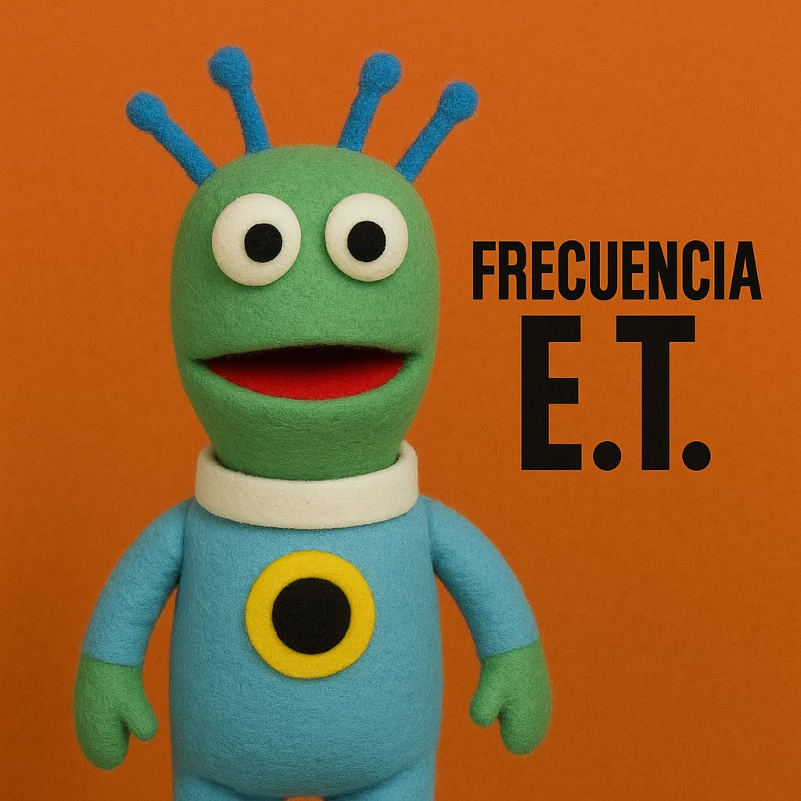

Integrantes: De Jesús Diego, López Flores José Manuel, Escareño Ruiz Rocío Yuritzi y Vega Flores Jennifer Pamela.
Episodio 1 - Conócenos: en este primer episodio puedes conocer los gustos musicales de los integrantes del podcast.
Episodio 2 - 31 minutos: se aborda un tema bastante inusual que es una recopilación de las mejores canciones de 31 minutos y también las peores.
Episodio 3 - Melodías Malditas
En este capitulo hablaremos de las canciones que son consideradas por muchos como muy tenebrosas
Episodio 3 - Melodías Malditas
Version de Espotify